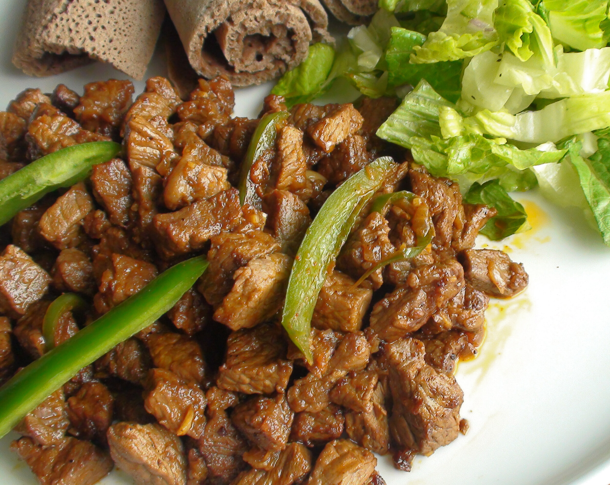

Tibs Recipe

Description
Ethiopian Tibs is a popular East African dish of beef cooked
with various ingredients that combine to create a fragrant,
delicious dish. In Ethiopia, tibs refer to a dish with cubed
or sliced beef or lamb.
Ingredients
- Beef
- Awaze Sauce
- Onions
- Black Pepper
- Jalapeno Peppers
- Niter Kibbeh (Traditional Clarified Butter)
- Garlic
- Lemons
- Berbere Spice
- Cumin
- Salt
- Cilantro
- Ginger Powder
Steps
-
In a large skillet, add the olive oil, and when heated,
add the chopped beef. You can also use a 12-inch cast
iron pan. Add salt and black pepper, and stir for a few
minutes on high heat till it is browned.
-
Melt niter kibbeh (Ethiopian clarified butter) in a skillet,
then add the chopped onions and minced garlic. Saute for a
few minutes, then add the sliced jalapeno peppers.
-
Add the Awaze sauce, simmer for 5 minutes on medium heat and
add the browned beef.
-
Top up with lemon juice and cilantro, and serve!